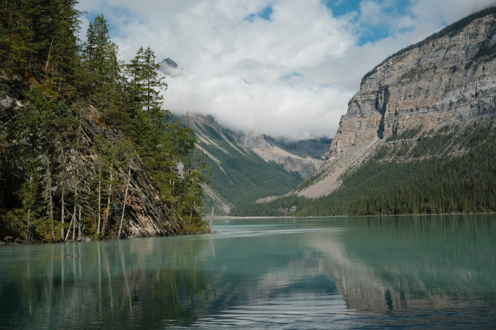

A Stormy Trip to Mount Robson
August 18, 2025
Mount Robson Provincial Park - July 1, 2021
The Berg Lake trail is located in Mount Robson Provincial Park, with Mount Robson being the highest peak in the Canadaia Rockies. The trail is 42km round-trip and filled with beautiful landmarks. We originally planned to hike the trail in 2021, but unfortunately, the trail was completely washed out by a heat wave that melted the glacier. We actually arrived at the trail and were due to start the hike the day that the bridges washed out and the trail was closed. It took BC Parks 4 years to rebuild the trail and it finally opened again this year! We are definitely more prepared this time around after experiencing many more backcountry adventures, but the weather would have been much better 4 years ago.
Our Itinerary
Day 1: Vancouver → Valemount
Valemount
We kept our exact itinerary from 2021 and stayed in Valemount the night before our hike. Valemount is the closest town and has a lot of options of accommodations and food. There's also the option of frontcountry camping at Mount Robson, but sleeping in a tent the night before the big hike seemed like a bad idea. The drive from Vancouver is quite long and we almost got into a head-on collision with a semi-truck that drifted into our lane along the way. Nevertheless, we arrived safely and checked into our hotel just before sunset.
We had dinner at K-DDUK Korean restaurant right next to where we stayed and were pleasantly surprised by how authentic the restaurant was. The entire staff were Korean and it was so nice to enjoy a proper meal before the hike. We briefly chatted with the hostess, who actually lived in Vancouver for a few years before moving to Valemount to help out with the family business. The food was not as good as in Vancouver, but it was still delicious and so satisfying in a place like Valemount.
Day 2: Valemount → Whitehorn
The first step of the hike is checking-in at the visitor center and picking up the camping tag. The process was very fast and the ranger was very friendly. He also confirmed our fears of the bad weather forecast and reminded us that it is a rainforest after all. Luckily, this first day was still sunny so we were able to enjoy the hike to Whitehorn Campground.
We finished packing the last things into our bags in the trailhead parking lot. The lot was very large and around half full, but we saw several cars parked on the shoulder of the road leading in, so perhaps it does get busy during weekends. The clouds cleared up while we were packing and we got to see the peak of Mount Robson for the first and only time during the trip.
The hike starts out very mild, with a wide path that also allows for bikes. Although many people claim that the stretch to Kinney Lake is "flat", it absolutely is not. There is a steady incline and occasional humps that quickly gets the heart rate up. The path is also very busy because Kinney Lake is very accessible and popular as a day hike for visitors. Luckily, this means there is less fear of bears since there are constantly people around.
Kinney Lake comes up very fast at the 4km marker and the next section is a very scenic stroll along the shoreline. We stopped for lunch at the Kinney Lake shelter even though it was still early in the day. We had a lot of time to kill since Whitehorn isn't too far away and we started the trail fairly early. The shelter wasn't very busy and we enjoyed eating with the beautiful view of the lake. There were some hikers on their way out too.
After Kinney Lake, there is a choice between traversing the Kinney Flats or taking the upper route used when water levels are high. We didn't even notice the split and just went along the flats. That was also the first appreciation of just how vast the landscape is, with towering mountains on both sides and flats that seem to never end. The weather had been quite dry so there were no streams to cross. At this point of the trip, we didn't know that was something to be thankful for. After the flats, the trail starts the climb up switchbacks all the way to Whitehorn. This path is part of the new trail system built after 2021.
We arrived at Whitehorn much earlier than we planned. We set up our tent and sleeping arrangements and left our food in the bear lockers. We considered hiking up to Emperor Falls since the weather was still nice but we also didn't want to tire ourselves out too much, so we decided to hike for 30 minutes and see where that takes us. We didn't know what to expect since this part of the trail was also newly built. The first part is flat until the new bridge, and then it hits the steepest section of the entire trail. Unfortunately, we didn't realized this at the time. We stopped at White Falls since it was a nice viewpoint and seemed like a good place to turn around.
When we got back to camp, we took a picnic table by the river and started to cook our dinner. It was still very early in the evening so we were the first ones to start cooking, but the backcountry is actually quite boring when it's too cold to play in the water and there are no other day hikes to do. We slowly enjoyed our rehydrated curry and rice for our first backcountry meal and cleaned up as more hikers started to arrive. With nothing better to do, we decided to just go to bed early. Despite our optimism, sure enough the rain started to pour as nightfall came and the pitter patter of the rain added a gloomy soundtrack to our first night in the backcountry.
Visitor center and trailhead parking lot
The hike starts out very mild, with a wide path that also allows for bikes. Although many people claim that the stretch to Kinney Lake is "flat", it absolutely is not. There is a steady incline and occasional humps that quickly gets the heart rate up. The path is also very busy because Kinney Lake is very accessible and popular as a day hike for visitors. Luckily, this means there is less fear of bears since there are constantly people around.
Kinney Lake comes up very fast at the 4km marker and the next section is a very scenic stroll along the shoreline. We stopped for lunch at the Kinney Lake shelter even though it was still early in the day. We had a lot of time to kill since Whitehorn isn't too far away and we started the trail fairly early. The shelter wasn't very busy and we enjoyed eating with the beautiful view of the lake. There were some hikers on their way out too.

Kinney Lake
After Kinney Lake, there is a choice between traversing the Kinney Flats or taking the upper route used when water levels are high. We didn't even notice the split and just went along the flats. That was also the first appreciation of just how vast the landscape is, with towering mountains on both sides and flats that seem to never end. The weather had been quite dry so there were no streams to cross. At this point of the trip, we didn't know that was something to be thankful for. After the flats, the trail starts the climb up switchbacks all the way to Whitehorn. This path is part of the new trail system built after 2021.
We arrived at Whitehorn much earlier than we planned. We set up our tent and sleeping arrangements and left our food in the bear lockers. We considered hiking up to Emperor Falls since the weather was still nice but we also didn't want to tire ourselves out too much, so we decided to hike for 30 minutes and see where that takes us. We didn't know what to expect since this part of the trail was also newly built. The first part is flat until the new bridge, and then it hits the steepest section of the entire trail. Unfortunately, we didn't realized this at the time. We stopped at White Falls since it was a nice viewpoint and seemed like a good place to turn around.
Near Whitehorn
When we got back to camp, we took a picnic table by the river and started to cook our dinner. It was still very early in the evening so we were the first ones to start cooking, but the backcountry is actually quite boring when it's too cold to play in the water and there are no other day hikes to do. We slowly enjoyed our rehydrated curry and rice for our first backcountry meal and cleaned up as more hikers started to arrive. With nothing better to do, we decided to just go to bed early. Despite our optimism, sure enough the rain started to pour as nightfall came and the pitter patter of the rain added a gloomy soundtrack to our first night in the backcountry.
Day 3: Whitehorn → Berg Lake
We woke up pretty early but the sound of the rain falling on the tent was very discouraging and we didn't want to venture out of the dry tent. We tried to wait for the rain to pause but it didn't seem to let up so we eventually just had to brave the weather around 9am. Many other campers were already in the shelter enjoying their breakfast and some had already packed up and left for the day. There's only four picnic tables under the shelter so it gets crowded quickly. Luckily, we are just two people so we were able to squeeze in with another group and enjoyed our breakfast.
The rain slowed down a bit after breakfast and we took the opportunity to quickly pack up our tent and gear. It started raining again by the time we were ready to leave, but we had our rain covers and rain jackets so we were prepared. We went along the same path we took the day before, which means we had to do the toughest section twice on this trip. The rainy weather was actually quite nice because it kept us cool as we made the steep climb with our heavy packs. We continued on to Emperor Falls, only stopping for some water breaks at the viewpoints.
Emperor Falls is a 150m detour from the main trail but it is a must. We ditched our packs at the split, which some people do but it may not be the best idea with the wildlife around. Nevertheless, we were able to enjoy the falls without our heavy packs and it was a good decision. The path to the falls is mostly flat and with the rainy weather, it became quite chilly as. we approached the end. Emperor Falls is so impressive. and you can safely get very close to actual falls. It was a very cool experience and one of the other sights that is just as nice in the rain. We took some photos and ate a snack and continued on our way.


There are some distinct sections of the remaining trail that traverses through very different landscapes. The trail mostly flattens out past Emperor Falls but the distance is still very grueling after the steep climb. We were definitely using the last of our energy by the time we finally reached the Berg Lake campground. Unfortunately, the low clouds and rainy weather means most of the views were obscured and we couldn't see much along the way. We found a very convenient campsite at Berg Lake right between the river and the shelter. Although some may prefer to camp in a less busy area, we enjoy the convenience and I'm comforted of having others nearby when I'm in the backcountry.
We didn't actually stop for lunch on the way to Berg Lake so we were quite hungry by the time we set up camp for the night so we had yet another early dinner. The shelter was already very busy since everyone was trying to escape the cold wet weather, so we had to squeeze in with another group again. Sharing tables seems to be an absolute necessity on this trip, which I didn't particularly enjoy. Although there were empty tables outside, the shelter was so warm and cozy from the wood fireplace that I really couldn't avoid it. We had a nice warm meal and recovered from our long hike in.

After dinner, we didn't really know what to do again. With no nice views, there wasn't really any point in going on the nearby day hikes. We settled for just sitting by the lake for awhile and hoping for the clouds to clear up. Unfortunately they did not, but I did manage to get the courage to take a dip in the lake. The water was surprisingly warmer than I expected, given how cold the weather was. It was very refreshing but I couldn't stay long to avoid getting sick. From this point on, I don't think I was every fully dry again for the rest of the trip. We settled in for an early night again, mostly just to avoid the rain and to avoid the crowded shelter.
Whitehorn in the morning
The rain slowed down a bit after breakfast and we took the opportunity to quickly pack up our tent and gear. It started raining again by the time we were ready to leave, but we had our rain covers and rain jackets so we were prepared. We went along the same path we took the day before, which means we had to do the toughest section twice on this trip. The rainy weather was actually quite nice because it kept us cool as we made the steep climb with our heavy packs. We continued on to Emperor Falls, only stopping for some water breaks at the viewpoints.
Emperor Falls
Emperor Falls is a 150m detour from the main trail but it is a must. We ditched our packs at the split, which some people do but it may not be the best idea with the wildlife around. Nevertheless, we were able to enjoy the falls without our heavy packs and it was a good decision. The path to the falls is mostly flat and with the rainy weather, it became quite chilly as. we approached the end. Emperor Falls is so impressive. and you can safely get very close to actual falls. It was a very cool experience and one of the other sights that is just as nice in the rain. We took some photos and ate a snack and continued on our way.
Sections of the Berg Lake Trail
There are some distinct sections of the remaining trail that traverses through very different landscapes. The trail mostly flattens out past Emperor Falls but the distance is still very grueling after the steep climb. We were definitely using the last of our energy by the time we finally reached the Berg Lake campground. Unfortunately, the low clouds and rainy weather means most of the views were obscured and we couldn't see much along the way. We found a very convenient campsite at Berg Lake right between the river and the shelter. Although some may prefer to camp in a less busy area, we enjoy the convenience and I'm comforted of having others nearby when I'm in the backcountry.
We didn't actually stop for lunch on the way to Berg Lake so we were quite hungry by the time we set up camp for the night so we had yet another early dinner. The shelter was already very busy since everyone was trying to escape the cold wet weather, so we had to squeeze in with another group again. Sharing tables seems to be an absolute necessity on this trip, which I didn't particularly enjoy. Although there were empty tables outside, the shelter was so warm and cozy from the wood fireplace that I really couldn't avoid it. We had a nice warm meal and recovered from our long hike in.
Berg Lake
After dinner, we didn't really know what to do again. With no nice views, there wasn't really any point in going on the nearby day hikes. We settled for just sitting by the lake for awhile and hoping for the clouds to clear up. Unfortunately they did not, but I did manage to get the courage to take a dip in the lake. The water was surprisingly warmer than I expected, given how cold the weather was. It was very refreshing but I couldn't stay long to avoid getting sick. From this point on, I don't think I was every fully dry again for the rest of the trip. We settled in for an early night again, mostly just to avoid the rain and to avoid the crowded shelter.
Day 4: Berg Lake → Kinney Lake
After sleeping before sunset for two nights in a row, I was actually too well rested to sleep in. I woke up for sunrise at. 5:30am hoping for a clear sky and words can't describe the joy I felt when I unzipped the tent and saw the mountains for the first time that were completely hidden behinds clouds the day before. I got changed as fast as I could so I could go out to the lake shore and catch the reflection of the sunlight on Mount Robson.
Despite my hopefulness, the clouds never fully cleared up so the top of Mount Robson was still hidden. As a result, there also wasn't much of a sunrise. To my surprise, the lake wasn't even calm enough to have any reflections either. Nevertheless, the view was breathtaking and I was so happy that I got to enjoy it, making the long hike actually worthwhile to me. After the initial excitement, we headed back to the shelter so we could make coffee. There were only a few other people up that early so we were able to sit at the front of the shelter to continue enjoying the view.
The morning was so beautiful and I truly soaked in all the views as I sipped my coffee. The sun even came out of a bit and we were all convinced that the weather forecast was wrong and we would have a nice sunny day. Around 9am was when all those hopes were shattered as the clouds rolled in again and the rain started to drizzle. After breakfast, we decided to try to go up to Toboggan Falls, thinking that the rain would stop again. Unfortunately, the rain only got worse as we climbed and we decided to just turn back. Back at Berg Lake, we slowly packed up our things in the tent as the rain continue to pour harder and harder. At some point there was even thunder, which really made us nervous for our hike out to Kinney Lake.
Nevertheless, we had to leave since we had a long trek ahead of us. The Berg Lake shelter was absolutely packed with people trying to escape the rain. There was barely any space, but we had no choice since we didn't want to pack up everything in the rain. We made do in a corner and quickly ate our lunch and headed out into the rain with no other choice. The rain was absolutely relentless and the trail was flooding with muddy sections everywhere. The path that we took to hike in just the day before was now submerged under a stream and we had to carefully step across the rocks to avoid getting any more wet than we had to.

There was a brief moment of blue skies as we passed Emperor Falls, so we decided to detour in again. The views were even better than the day before but we had to take in our heavy backpacks to avoid getting them wet. As soon as we left, the relentless rain returned and the rest of the hike was horrendous. Parts of the trail could really just be best described as a muddy waterfall that we had to climb down. The rain was also so loud and the droplets were so heavy landing on our rain jackets. We passed a lot of hikers on their way in and everyone looked miserable. The whole hike out just feels like a blur of never ending rain and mud. All the nice blue streams of water we saw on the way in were replaced by raging rapids of brown mud and there were way more waterfalls that we saw before.
We didn't take any breaks and we didn't get to stop at Whitehorn on the way back because the shelter was packed. We just wanted to get to Kinney Lake as fast as we could. Luckily, because we were early (again), we were able to get a nice spot right by the lake. Although we quickly realized that the lake had risen significantly since we saw it last and the shoreline was much closer to the tent pad now. We had yet another early dinner and crawled into our slightly damp tent.
Berg Lake at sunrise
Despite my hopefulness, the clouds never fully cleared up so the top of Mount Robson was still hidden. As a result, there also wasn't much of a sunrise. To my surprise, the lake wasn't even calm enough to have any reflections either. Nevertheless, the view was breathtaking and I was so happy that I got to enjoy it, making the long hike actually worthwhile to me. After the initial excitement, we headed back to the shelter so we could make coffee. There were only a few other people up that early so we were able to sit at the front of the shelter to continue enjoying the view.
Watching Berg Lake from the shelter
The morning was so beautiful and I truly soaked in all the views as I sipped my coffee. The sun even came out of a bit and we were all convinced that the weather forecast was wrong and we would have a nice sunny day. Around 9am was when all those hopes were shattered as the clouds rolled in again and the rain started to drizzle. After breakfast, we decided to try to go up to Toboggan Falls, thinking that the rain would stop again. Unfortunately, the rain only got worse as we climbed and we decided to just turn back. Back at Berg Lake, we slowly packed up our things in the tent as the rain continue to pour harder and harder. At some point there was even thunder, which really made us nervous for our hike out to Kinney Lake.
Toboggan falls hike
Nevertheless, we had to leave since we had a long trek ahead of us. The Berg Lake shelter was absolutely packed with people trying to escape the rain. There was barely any space, but we had no choice since we didn't want to pack up everything in the rain. We made do in a corner and quickly ate our lunch and headed out into the rain with no other choice. The rain was absolutely relentless and the trail was flooding with muddy sections everywhere. The path that we took to hike in just the day before was now submerged under a stream and we had to carefully step across the rocks to avoid getting any more wet than we had to.
Kinney Lake after the rain
There was a brief moment of blue skies as we passed Emperor Falls, so we decided to detour in again. The views were even better than the day before but we had to take in our heavy backpacks to avoid getting them wet. As soon as we left, the relentless rain returned and the rest of the hike was horrendous. Parts of the trail could really just be best described as a muddy waterfall that we had to climb down. The rain was also so loud and the droplets were so heavy landing on our rain jackets. We passed a lot of hikers on their way in and everyone looked miserable. The whole hike out just feels like a blur of never ending rain and mud. All the nice blue streams of water we saw on the way in were replaced by raging rapids of brown mud and there were way more waterfalls that we saw before.
We didn't take any breaks and we didn't get to stop at Whitehorn on the way back because the shelter was packed. We just wanted to get to Kinney Lake as fast as we could. Luckily, because we were early (again), we were able to get a nice spot right by the lake. Although we quickly realized that the lake had risen significantly since we saw it last and the shoreline was much closer to the tent pad now. We had yet another early dinner and crawled into our slightly damp tent.
Day 5: Kinney Lake → Vancouver
I was hopeful and tried to wake up for sunrise again. Unfortunately, the clouds did not clear up this time. We were also very tired of being wet and cold so we got up anyway, ate our breakfast, and packed up. We were on our way out before many of the other campers were even awake. Even though it was so early, we still ran into a lot of hikers on their way in. After the 7km hike, we were finally greeted by the sight of the parking lot!
It was honestly almost a better sight than when we first saw the Berg glacier. We were so happy to be done with the hike and could finally change out of our dirty hiking clothes. We packed up the car and drove out to the visitor center where we used to wifi to let our family know we made it out safely and grabbed some coffee and snacks from the cafe. Then we were on our merry way.
The drive back to Vancouver felt very long at the end of the trip. But the weather got better and warmer as we drove south and I could feel myself finally thaw from the weekend. We only stopped once in Kamloops and just drove straight for home. There was of course traffic near Chilliwack, but apparently it was from everyone stopping to look at an accident in the opposite direction. Eventually we made it home and that was the end of our trip.
Last morning on the trail
It was honestly almost a better sight than when we first saw the Berg glacier. We were so happy to be done with the hike and could finally change out of our dirty hiking clothes. We packed up the car and drove out to the visitor center where we used to wifi to let our family know we made it out safely and grabbed some coffee and snacks from the cafe. Then we were on our merry way.
The drive back to Vancouver felt very long at the end of the trip. But the weather got better and warmer as we drove south and I could feel myself finally thaw from the weekend. We only stopped once in Kamloops and just drove straight for home. There was of course traffic near Chilliwack, but apparently it was from everyone stopping to look at an accident in the opposite direction. Eventually we made it home and that was the end of our trip.